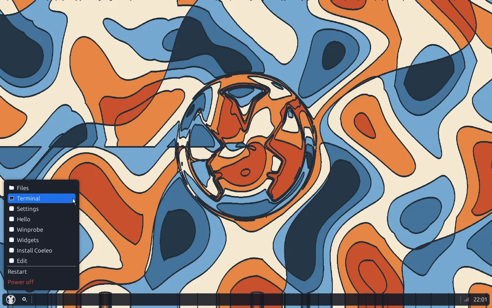

Boot e base da CPU
Limine em UEFI e BIOS legado, GDT, IDT, timer LAPIC e roteamento de interrupções, ACPI e relógio RTC. A troca de contexto vive em assembly nude em um único arquivo.
Um sistema operacional x86_64 escrito do zero, em Rust.
Não é Linux, não é Windows, não é Redox e não é um RTOS. O kernel, a ABI de syscalls, o design system e o userspace são construídos neste repositório — do boot ao desktop.

O Coeleo OS reutiliza seletivamente componentes focados em vez de embutir um sistema operacional inteiro. Todo o resto é código que você pode ler aqui.
O restante — memória física e virtual, heap, escalonador preemptivo, ABI de syscalls, compositor em software, design system, shell, toolkit de UI, gerenciador de arquivos, instalador e gerenciador de pacotes — é implementado neste repositório.
Do boot até um desktop e um prompt funcional: memória, escalonador, ABI de syscalls, sistema de arquivos, drivers e compositor próprios, com o userspace por cima. Um núcleo, framebuffer em software e no máximo oito processos ao mesmo tempo.
Limine em UEFI e BIOS legado, GDT, IDT, timer LAPIC e roteamento de interrupções, ACPI e relógio RTC. A troca de contexto vive em assembly nude em um único arquivo.
Bitmap de frames físicos (PMM), paginação de 4 níveis (VMM) com isolamento estrito entre espaço de usuário e de kernel, e um alocador de heap do kernel.
Round-robin movido por interrupções do timer LAPIC, com uma tabela de PCBs limitada a 8 processos simultâneos, coleta de zumbis e destruição limpa de recursos.
27 syscalls acessadas por meio da libcoeleo, cobrindo processos, arquivos, pipes, rede, tempo, superfícies de janela, informações do sistema e a área de transferência.
FAT32 com alocação de clusters, nomes longos, travessia, leitura, escrita, truncate e sync. Backends de disco: VirtIO-blk, SATA AHCI com partições GPT e USB Mass Storage.
smoltcp sobre virtio-net ou Intel e1000e — um PHY, escolhido no boot. IPv4 estático ou DHCP, ARP, ICMP echo, registros DNS A, cliente HTTP e TLS 1.2/1.3.
Teclado PS/2 com tradução completa de scancodes e despacho de eventos de tecla; mouses PS/2 e USB HID sobre controladores UHCI e xHCI.
Renderização puramente em CPU sobre framebuffer linear, com recorte por dirty-rect e atualizações seletivas de dano, repintando apenas o que mudou. Sem aceleração de hardware.
O chrome do kernel e os aplicativos em Ring 3 pintam a partir da mesma paleta e das mesmas métricas (coeleo-theme), com bordas hairline via SDF, cantos com anti-aliasing e sombras em camadas.
Janelas flutuantes com arraste, redimensionamento por 8 direções, controles de minimizar / maximizar / fechar, elisão de título e borda de destaque brilhante na janela em foco.
Um painel flutuante em pílula ou de largura total, com relógio ao vivo e indicador de rede, além do KRunner (Alt+Space) — um overlay modal com busca fuzzy e navegação por teclado.
Um explorer embutido de dois painéis, com pílulas de breadcrumb, barra lateral de Locais e Dispositivos, ícones por arquivo e navegação por teclado.
Uma área de transferência global em nível de kernel por trás da SYS_CLIPBOARD, compartilhada pelo terminal, pelo shell e pelos apps gráficos. Toasts arredondados flutuantes informam trabalho em segundo plano, cópias e alertas.
Desktop em tela cheia com cores sólidas ou papéis de parede JPEG/PNG decodificados, com preferências persistidas em disco entre reinicializações.
Um terminal Flanterm embutido na janela, com paleta ANSI de 16 cores harmonizada com o tema Slate, posicionamento de cursor, texto em negrito e blits limpos.
Edição de linha com Home/End, saltos por palavra, kill e transpose; um anel de histórico de 128 entradas, busca reversa com Ctrl+R, completação por Tab, aliases, ponto e vírgula, pipes e redirecionamentos.
52 builtins cobrindo arquivos e diretórios, processamento de texto (grep, wc, head, tail), processos e memória, inspeção de armazenamento, pacotes, rede e energia.
Prefixos semanticamente estilizados error:, warning:, tip: e usage:, descrições específicas por alvo e um motor de sugestão por Levenshtein que pergunta “você quis dizer…?”.
Assinaturas Ed25519 e verificação de integridade SHA-256 para payloads .coe, obtidos por HTTP em texto claro ou TLS e instalados do disco ou da rede.
edit, um editor TUI sobre o terminal virtual, com atalhos de salvar e sair.
Um instalador gráfico e de linha de comando que implanta o sistema em um disco AHCI ou USB particionado com GPT.
A libcoeleoui dá aos apps em Ring 3 a mesma linguagem de widgets do desktop; o binário widgets é uma demonstração ao vivo dela.
Capturadas do Coeleo OS rodando no QEMU. Selecione uma imagem para ampliar.
Um único crate de kernel, pastas por domínio. Os programas são ELFs estáticos em Ring 3 por cima, e uma ABI de syscalls é a única coisa que cruza a linha.
Ring 3 - userspace Ring 0 - kernel
-------------------------------- --------------------------------
ELFs estáticos no_std um único crate
entrada em _start pastas por domínio, não crates
sem libc, sem linking dinâmico nenhum código de userspace linkado
| |
| syscalls (27) |
+---------------------+
wrappers da libcoeleo
a única travessia entre os rings| Domínio | Pasta | Responsabilidade |
|---|---|---|
| Boot / CPU | boot/ | GDT, IDT, LAPIC, console, ACPI, RTC |
| Memória | mem/ | PMM, VMM, heap do kernel |
| PCI / host USB | bus/ | Espaço de configuração PCI, xHCI |
| Disco / FAT | fs/ | FAT32, camada de bloco, GPT, AHCI, USB MSC, instalador |
| Rede | net/ | smoltcp, HTTP, TLS, DHCP, DNS A, virtio-net ou e1000e |
| Entrada | input/ | Teclado e mouse PS/2, UHCI, xHCI HID |
| Desktop | ui/ | Compositor, painel, KRunner, gerenciador de arquivos, VT, janelas |
| Processos | task/ | Escalonador preemptivo, syscalls, FDs, pipes, carregador ELF |
Os programas são ELFs estáticos no_std (x86_64-unknown-none) que entram em _start e conversam com o kernel pela libcoeleo.
| Aplicativo | Função |
|---|---|
sh | Shell interativo: edição de linha, completação, prompt dinâmico, aliases, builtins |
edit | Editor de texto TUI sobre o terminal virtual |
widgets | Demonstração gráfica do toolkit em modo imediato libcoeleoui |
install | Instalador gráfico e de linha de comando para discos GPT / AHCI |
winprobe | Benchmark de criação de superfícies e animação em Ring 3 |
clock | Processo gráfico de relógio em segundo plano |
ls · cat · echo | Utilitários de linha de comando autônomos para arquivos |
hello · fault · spin | Binários de verificação de spawn, tratamento de falhas e loop de CPU |
| Crate | Função |
|---|---|
libcoeleo | Wrappers de syscalls com uma API segura e livre de alocação |
libcoeleoui | Toolkit de widgets de UI em modo imediato |
coeleo-theme | Design tokens: paleta e métricas de layout |
coeleo-draw | Primitivas 2D: traços arredondados via SDF, texto e ícones |
coeleo-image | Decodificação de JPEG e PNG para papéis de parede |
pkg | Verificação Ed25519 e manipulação de pacotes .coe |
Requer um host Linux com QEMU. O Rust nightly é fixado pelo arquivo de toolchain.
sudo apt install make build-essential xorriso \
qemu-system-x86 python3 mtools gdisk# ISO do kernel, ELFs do userspace e pacotes de teste
make all
# Boot UEFI: virtio-blk, virtio-net, mouse USB
make runmake run-ahci # disco de boot SATA/AHCI com uma partição GPT
make run-e1000e # NIC Intel e1000e em vez de virtio-net
make run-usb # xHCI com USB Mass Storage
make run-bios # dar boot na ISO pelo BIOS legado em vez de UEFI
make run-hdd # dar boot a partir de uma imagem de disco GPT (UEFI)As suítes de integração rodam o QEMU sem interface e verificam o log serial — incluindo TLS e verificação de assinatura de pacotes.
make test-phase8 test-phase9 test-phase10 test-phase13 test-phase14
make test-plasma-p2 test-plasma-p3 test-plasma-p4 test-plasma-p5 test-plasma-p6 test-plasma-p7
make test-phase22O trabalho aqui é dividido por fases: uma especificação escrita, depois o código, depois o gate daquela fase. A ordem abaixo é o que desbloqueia uma pessoa em uma máquina real, não o que é mais fácil de demonstrar.
Já disponível — do boot a um desktop: memória física e virtual próprias, escalonador preemptivo, ABI de syscalls, compositor, shell, editor, instalador, gerenciador de pacotes e TLS. Em um núcleo, com no máximo oito processos ao mesmo tempo, sobre FAT32.
Drivers que acabam com a dependência de uma porta dos anos 1990 e de um controlador de disco legado.
O SSD interno típico não é AHCI. Isto traz a mesma árvore FAT para um drive moderno.
Rede cabeada sem NIC PCI, para que uma máquina com dongle não fique offline.
O que transforma um prompt funcional em uma sessão confiável.
mmap anônimo e IPC de cópia
Hoje a memória é acessada pela API de alocação da biblioteca. Uma interface geral de mapeamento é o que destrava o resto desta faixa.
A pilha TCP/IP vive no kernel hoje. Sockets expõem TCP ao Ring 3 sem mudar onde a pilha roda.
Renderizar documentos reais no próprio sistema, começando por um subconjunto definido de HTML e CSS.
Sessões multiusuário e níveis de privilégio, como um recurso nativo do Coeleo. Hoje não há usuários nem privilégios a elevar.
Acertar o relógio pela rede em vez de confiar apenas no RTC.
Um núcleo e um tick de 100 Hz já cobrem o envelope alvo, então isto espera por uma medição que peça por eles.
Parar de pagar por uma interrupção periódica quando nada está executável.
Colocar todos os núcleos para trabalhar, o que significa reescrever o travamento de memória e heap de ponta a ponta.
Hoje há uma thread por processo. Threads exigem antes uma nova história de PCB, pilha e espaço de endereçamento.
Cada um destes é um projeto em si, e cada um espera pela faixa acima.
Blobs de firmware e 802.11 são onde sistemas pequenos travam, então isto entra depois que a rede cabeada estiver sólida.
Nenhum dispositivo de som é controlado hoje.
Estados de sono S3, construídos sobre o trabalho de ACPI já feito.
Relato de energia e eventos de tampa para uso em laptop.
O horizonte distante: os subsistemas que transformam um desktop funcional em uma plataforma de propósito geral.
Mover ambos para fora do kernel, atrás de comunicação entre processos.
Um toolkit de nível mais alto para construir aplicações, ao lado do de modo imediato.
Um layout em mosaico controlado por teclado, oferecido ao lado do desktop flutuante.
Um segundo sistema de arquivos, elevando o teto por arquivo do FAT32 e adicionando segurança contra travamentos.
Linking dinâmico e uma ABI familiar para que software portado de outros lugares possa carregar.
Endereçamento de nova geração ao lado da pilha IPv4.
Renderização e computação aceleradas por hardware, além do framebuffer em software.
Um espaço de endereçamento maior, mais isolamento de DMA para drivers de dispositivo.
Estender o mesmo motor rumo ao layout completo de documentos e conteúdo web mais rico.
Respostas curtas e factuais sobre o que é o Coeleo OS, onde ele roda e o que ele deliberadamente não é.
Coeleo OS é um sistema operacional x86_64 escrito do zero em Rust. Ele tem kernel, ABI de syscalls, compositor em software, shell e userspace próprios, todos construídos em um único repositório. Não é uma distribuição Linux e não usa o kernel Linux.
Não. O Coeleo OS não usa o kernel Linux e não traz userspace Linux. Ele reutiliza alguns componentes focados de terceiros — Limine para boot, Flanterm para emulação de terminal, smoltcp para TCP/IP, fatfs para FAT32 e rustls para TLS — e implementa o resto por conta própria.
Ele dá boot em máquinas UEFI e BIOS legado, e o caminho de desenvolvimento documentado é o QEMU com virtio-blk, virtio-net e entrada USB. O alvo é um único núcleo, cerca de 512 MiB de RAM e um framebuffer linear em software, sem GPU 3D.
Em um host Linux com QEMU instalado, execute "make all" para compilar a ISO do kernel e os ELFs do userspace, e depois "make run" para dar boot em UEFI com virtio-blk, virtio-net e mouse USB. Alvos como make run-ahci, make run-e1000e, make run-usb e make run-bios cobrem outras configurações de disco, rede e firmware.
O Redox OS é um sistema tipo Unix com microkernel, compatibilidade de código-fonte com Linux e BSD, suporte a POSIX e uma toolchain de compilador portada. O Coeleo OS tem escopo menor e é deliberadamente não compatível com Unix: o kernel é um único crate, não há libc, não há linking dinâmico nem ABI POSIX, e os programas são ELFs estáticos no_std que entram em _start e conversam com o kernel por 27 syscalls. Uma ABI POSIX, a relibc e objetos compartilhados estão no roadmap de longo prazo, não implementados hoje.
O Coeleo OS é distribuído sob os termos da Licença MIT ou da Licença Apache 2.0, à sua escolha (MIT OR Apache-2.0). Componentes de terceiros como Limine, Flanterm, smoltcp, fatfs e rustls mantêm suas próprias licenças.
Ainda não. O escalonador roda em um núcleo, com tick LAPIC de 100 Hz e uma tabela de processos limitada a oito processos simultâneos. Multiprocessamento simétrico e threads dentro de um processo estão no roadmap, mas não estão implementados.